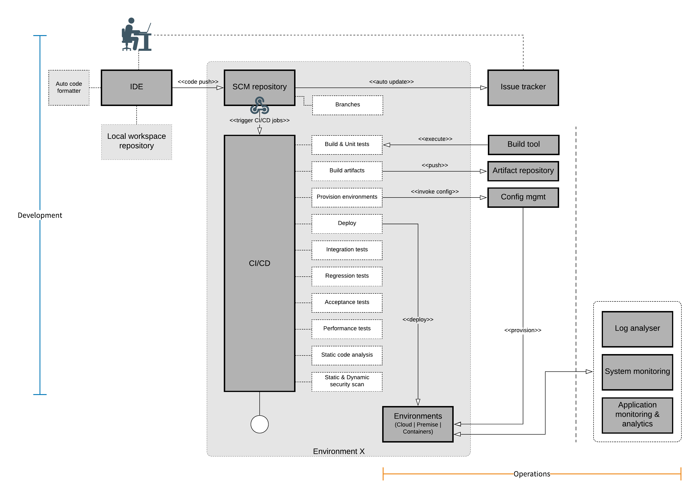

DevOps automation guide
Kick start your complete DevOps automation setup within a few hours.
Ramkumar Rengasamy
What is DevOps? Why we require DevOps? How DevOps helps us to thrive the productivity? I am seriously not going to talk about this.
All I am going to explain is how to kick start the DevOps automation process just in a few hours.
Picture speaks thousand words
Read the diagram from top-left to bottom-right.
DevOps process starts from development, flow towards operations, and cycle back to development and flow back to operations. This cyclic process(iteration) continues until the software gets produced.
IDE – Integrated development environment
Productivity increases by having the right tool in the right place at the right time. IDE plays a vital role in development. So, choose your IDE smartly.
Best practices
- Install important plugins if not available.
- Install/Enable auto code formatter and code cleaner. Everyone likes to see something that is beautiful. 20% of the code life span goes for development and remaining for maintenance. Beautifully written codes attract developer and are easy to read, understand and maintain.
- Install/enable test coverage, static code analyzer, and bug finder plugins for handy development.
SCM – Source code management
For maintaining all your project source code, you need a centralized repository. Branching strategy of your SCM defines how efficient your development and release process is. SCM tools can be self-hosted and self-managed, or cloud-hosted and self-managed, or it could be managed cloud-hosted services. No matter where it is hosted if your source code is safe and 99% available. Ensure to take backups in case of self-managed.
Best practices
- Push your working code to the repository every day. Make sure your code shouldn’t break your CI/CD pipeline.
- Use efficient branching strategy for greater maintenance of code.
Integration with CI/CD
Setup a webhook to your CI/CD pipeline to trigger the pipeline jobs for every code push to the SCM repository.
Issue tracker
The issue tracker can be integrated with SCM, so that any code check-in will update the corresponding activity against the story/issue. Issue tracker tools can be hosted in on-premise or cloud or as a managed service.
Best practices
- Code commit message must include story/issue id for mapping.
CI/CD – Continuous Integration/ Continuous deployment
CI/CD is the backbone of the DevOps process, CI/CD tools orchestrate the entire code development and deployment process. An excellently designed CI/CD pipeline can make sure the code gets deployed starting from the dev system until the production system without any manual intervention.
CI/CD pipeline executes jobs on an orderly basis most of the time. Each job’s outcome will be an input for another job.
Pipeline jobs
Pipeline jobs are a piece of defined work for the CI/CD tool, which executes to provide a certain outcome. These jobs must be set or enabled or written as a script in CI/CD tools depends on the nature of the tool used. If any out-of-the-box functionality is not available, then writing a custom script is recommended. Currently, available market tools are quite competitive and provide most of the functionalities.
- SCM webhook triggers the CI/CD pipeline process.
- CI/CD pipeline pulls the source code from the pre-defined SCM repository.
Build & unit-tests job begins immediately after the source code download is done. It is advisable to use build tool for your project. CI/CD must have the build software ready in order to execute the build script. Note that it is not mandatory that ‘build & unit-tests’ job must run in the same CI/CD host machine.
Unit tests ensure the code integrity during the development cycle. Refer the following feed for more information on unit-test. Test driven development
- ‘Build artifacts’ job begins as soon as source gets built. Artifact builder prepare the built code as a deployable entity. Deployable artifacts are pushed to artifact repository for deployment and maintenance purpose.
- “Provision environment” is an optional step, purely depends on the technology used. For monolithic applications, it would make sense to provision the environment once and make deployment multiple times. For microservices, it would make sense to provision the environment on the go. Containers are best suited for microservices as the provisioning can be done easily just by rolling out the container images, else provisioning scripts need to be written using config management tools. However, operation teams can leverage config management tools for provisioning systems on demand basis. A new trending topic is Infrastructure as a code, where one can write scripts to provision the entire environment. Most of the cloud native infrastructure creation happens via code.
-
Test sequence
There are n number of tests that can be performed on the source code. However, there are certain mandatory tests that should be performed to ensure the quality of the deliverables. They are
- Integration tests ensure the integrity of the systems and ensures that all the integrated functionalities work great together. In order to run the integration tests, all the dependency systems must be up and running. So, the job must start all the systems and validates it availability using command line arguments like (cURL or WGET)
- Regression tests are quite popularly known as automation testing. Quality assurance scripts must be written to ensure all the test scenarios are validated. It ensures that all the functionalities work fine with any modifications to the source code.
- Performance test is the essential job as part of the pipeline, and it can be automated. However, I would recommend keeping the performance testing as a scheduled job rather than keeping it as part of the pipeline, because running performance test keep all the resources occupied and downgrade the development productivity.
-
Static code analysis
Static code analysis job is highly helpful when it comes to analysis and fixing the quality of code written. It scans through the code to give report on potential issues with respect to the common coding convention and standardization practices, these default scanning rules can be overridden to use project specific rules. It also provides recommendations to fix the issues. It is recommended to make this job as scheduled nightly job to improve the coding and CI cycle. Threshold level must be set to ensure that the quality of code should not be below that level. Usually, it is advisable to set this limit to 80% due to 80-20% rule. -
Application security scan
A paramount importance must be given to the security scan for those applications which has potential risk of exposing data over internet. This scan analyses both static code (static scan) and runtime code (dynamic scan). As an output, a report is generated with all the potential risks and recommendation to fix it. It is up to the delivery, business and ISRM team to decide on the weightage and priority of the issue. Any tool used must adhere to the OWASP standards and recommendations.
Artifact repository
Artifact repository is useful to store and manage all versions of binary artifacts. Typically, each successfully built & packaged codes are stored here. It is optional to use artifact repo within the DevOps process, case-to-case it varies, if you write one-time use code, it would make sense not to use artifact repo. It can be hosted on cloud or on premise or as a managed service.
Configuration/ provisioning tool
Configuration or provisioning tools are used to provision and configure the deployment environment. These tools are sophisticated enough to build any deployment environments just by pre-written code. These tools can be used for provisioning on-premise and cloud environment too. These days, cloud providers are offering a concept of infrastructure as code (IaC), which can provision and configure the cloud environment just by code. Now-a-days, IaC can be written on multi-languages.
Containerization
As an alternate, containers can be used for provisioning environments, deploying and triggering the applications. A set of scripts that deploy the code package and start the containers which intern enable the application services. These services are monitored continuously by the container’s orchestration tools.
Deployment environments
Once the configuration management tool provisioned the deployment environments, an automated CI/CD job triggers the deployment process. Deployment process usually consist of deploying the build package in the environment and start the application services or trigger the self-contained executable packages. Once the application services are activated, a set of cURL commands can be triggered to understand the application service status.
Monitoring
Monitoring is the key aspect in the complete automation process. Automated monitoring and alerting system help to identify and react on health data of the systems, applications and logs.
-
System monitoring
This monitors the health of servers and other infrastructures.
-
Application monitoring
This monitors the health of deployed applications, it also monitors the performance and transactions of the applications.
-
Log monitoring
Monitors and alert the respective stakeholders when it encounters error.
Conclusion
DevOps automation is the key attribute in achieving the overall DevOps process. Hence, always start simple and continuously improve your automation process. Figure out for any human intervention and plan to make it automated.
Coin always have two sides, I have provided my thoughts on DevOps automation process more from development perspective. These approaches can be taken as a reference model to kick start your automation process. However, this model can be redesigned based on individual use-cases.